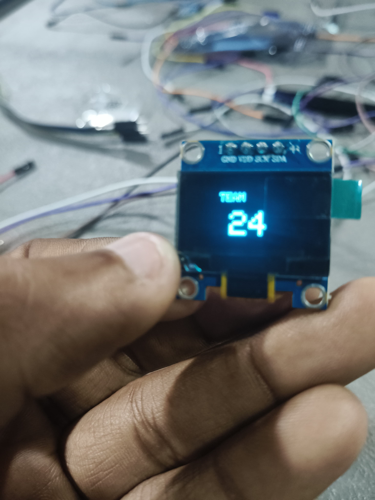

Hardware & Embedded Systems
Seven builds from ProtoSem 1.18 on the ESP32 and Arduino Uno — starting with a single GPIO blink and working up through local, voice, and cloud control, a light-driven closed loop, a four-task FreeRTOS alert system, and a sensor-driven game. Each entry below includes the components used, how it was built, the wiring, and the firmware.
Jump straight to any experiment or project
The starting point of the whole sequence — programming the ESP32 to blink an onboard LED. It's a small result on its own, but it confirms the board setup, GPIO control, and toolchain that every later experiment builds on top of.
// Experiment 1 — Blinking an LED on ESP32
#define LED_PIN 2 // Onboard LED on most ESP32 DevKit boards
void setup() {
pinMode(LED_PIN, OUTPUT);
Serial.begin(115200);
}
void loop() {
digitalWrite(LED_PIN, HIGH);
Serial.println("LED ON");
delay(500);
digitalWrite(LED_PIN, LOW);
Serial.println("LED OFF");
delay(500);
}Control moves off the board and onto a page a person can actually click. The ESP32 hosts a lightweight website on the local network using Arduino, and toggling a button there switches a bulb connected through the board.
/api/on and /api/off.// Experiment 2 — Bulb control via a locally hosted website
#include <WiFi.h>
#include <WebServer.h>
const char* ssid = "YOUR_WIFI_SSID";
const char* password = "YOUR_WIFI_PASSWORD";
#define RELAY_PIN 26
WebServer server(80);
bool bulbState = false;
const char* page = R"rawliteral(
<!DOCTYPE html><html><body style="font-family:sans-serif;text-align:center;margin-top:60px;">
<h2>Bulb Control</h2>
<button onclick="fetch('/api/on')">Turn ON</button>
<button onclick="fetch('/api/off')">Turn OFF</button>
</body></html>
)rawliteral";
void handleRoot() { server.send(200, "text/html", page); }
void handleOn() {
digitalWrite(RELAY_PIN, HIGH);
bulbState = true;
server.send(200, "text/plain", "ON");
}
void handleOff() {
digitalWrite(RELAY_PIN, LOW);
bulbState = false;
server.send(200, "text/plain", "OFF");
}
void setup() {
Serial.begin(115200);
pinMode(RELAY_PIN, OUTPUT);
digitalWrite(RELAY_PIN, LOW);
WiFi.begin(ssid, password);
while (WiFi.status() != WL_CONNECTED) {
delay(500);
Serial.print(".");
}
Serial.println("\nIP address: " + WiFi.localIP().toString());
server.on("/", handleRoot);
server.on("/api/on", handleOn);
server.on("/api/off", handleOff);
server.begin();
}
void loop() {
server.handleClient();
}The same bulb from Experiment 2, but the trigger is now spoken instead of clicked. A Google Voice Assistant command gets routed through IFTTT to the existing local website, so the hardware side stayed untouched — only the way a command reaches it changed.
/api/on
endpoint from Experiment 2./api/off.Applet trigger : Google Assistant — "turn on the bulb"
Applet action : Webhooks — Make a web request
URL : http://<ESP32_IP_OR_TUNNEL>/api/on
Method : GET
Content Type : text/plain
// Repeat with "turn off the bulb" -> /api/offLocal control becomes remote control. The bulb is now switched through a website backed by Firebase, with the ESP32 watching the cloud database for state changes instead of only listening on the local network — reachable from anywhere, not just the same Wi-Fi.
/appliances/bulbState for
changes.// Experiment 4 — Bulb control via a Firebase-connected website
#include <WiFi.h>
#include <Firebase_ESP_Client.h>
#define WIFI_SSID "YOUR_WIFI_SSID"
#define WIFI_PASSWORD "YOUR_WIFI_PASSWORD"
#define API_KEY "YOUR_FIREBASE_API_KEY"
#define DATABASE_URL "YOUR_PROJECT.firebaseio.com"
#define RELAY_PIN 26
FirebaseData fbdo;
FirebaseAuth auth;
FirebaseConfig config;
bool bulbState = false;
void setup() {
Serial.begin(115200);
pinMode(RELAY_PIN, OUTPUT);
WiFi.begin(WIFI_SSID, WIFI_PASSWORD);
while (WiFi.status() != WL_CONNECTED) delay(300);
config.api_key = API_KEY;
config.database_url = DATABASE_URL;
Firebase.begin(&config, &auth);
Firebase.RTDB.beginStream(&fbdo, "/appliances/bulbState");
}
void loop() {
if (Firebase.RTDB.readStream(&fbdo) && fbdo.streamAvailable()) {
bulbState = fbdo.to<bool>();
digitalWrite(RELAY_PIN, bulbState ? HIGH : LOW);
Serial.println(bulbState ? "Bulb -> ON" : "Bulb -> OFF");
}
}The closing experiment takes the person out of the loop. An LDR reads ambient light and the board decides on its own whether the bulb should be on — no button, no voice command, no remote trigger, just the system responding to its environment. Every earlier experiment needed a human or a cloud request to act as the trigger; this one closes the loop entirely on-device.
ESP32 DevKit
┌───────────────────┐
│ │
LDR AO ─┤ GPIO34 (ADC-only) │
LDR VCC ┤ 3.3V │
LDR GND ┤ GND │
│ │
│ GPIO26 ───────────┼──── Relay IN
└───────────────────┘
Relay COM/NO → Bulb
(same circuit as Experiment 2)// Experiment 5 — Bulb automation via an LDR sensor
#define LDR_PIN 34 // ADC-only input pin
#define RELAY_PIN 26
int threshold = 2500; // tune to the room's lighting
int hysteresis = 150; // gap around the threshold so the relay doesn't chatter
bool bulbState = false;
void setup() {
Serial.begin(115200);
pinMode(RELAY_PIN, OUTPUT);
digitalWrite(RELAY_PIN, LOW);
Serial.println("LDR automation ready.");
Serial.printf("Threshold: %d (+/- %d)\n", threshold, hysteresis);
}
void loop() {
int lightLevel = analogRead(LDR_PIN);
if (!bulbState && lightLevel > threshold + hysteresis) {
bulbState = true;
digitalWrite(RELAY_PIN, HIGH);
} else if (bulbState && lightLevel < threshold - hysteresis) {
bulbState = false;
digitalWrite(RELAY_PIN, LOW);
}
Serial.printf("LDR: %d -> Bulb %s\n", lightLevel, bulbState ? "ON" : "OFF");
delay(500);
}analogRead(LDR_PIN) — reads the raw light level from the 12-bit ADC (0–4095)threshold — the raw value that separates "dark enough" from "bright enough";
tuned by trial and error for the room it sits inhysteresis — a small buffer zone around the threshold so a reading hovering
right at the line doesn't flip the relay on and off repeatedlybulbState — tracked in code rather than re-derived every loop, so the
hysteresis check has something to compare againstdigitalWrite(RELAY_PIN, ...) — drives the exact relay wired in Experiment 2delay(500) — a simple 500 ms sampling interval; no interrupts needed for a
signal that changes this slowlyLDR: 3421 -> Bulb ON
LDR: 3390 -> Bulb ON
LDR: 2810 -> Bulb ON
LDR: 1875 -> Bulb OFF
LDR: 1690 -> Bulb OFF
LDR: 1640 -> Bulb OFF
LDR: 2760 -> Bulb ONThe bulb reacts as soon as a reading crosses the threshold — at a 500 ms sampling rate the switch feels immediate to a person in the room, with no noticeable lag.
| Experiment | Trigger | Range | Core Tech |
|---|---|---|---|
| 1 — LED Blink | Code upload | On-device | GPIO |
| 2 — Local Web Control | Browser click | Local Wi-Fi | HTTP + Relay |
| 3 — Voice Control | Spoken command | Anywhere (voice) | IFTTT Webhooks |
| 4 — Firebase Control | Web app | Anywhere (internet) | Firebase RTDB |
| 5 — LDR Automation | Ambient light | Local, autonomous | Analog sensor |
Two smaller pieces built in one session: rendering our team number on an I2C OLED display, then a short reaction-based game driven by live ultrasonic distance readings — display interfacing and real-time sensor input in the same sketch.
// Project — ESP32 OLED Display & Ultrasonic Reaction Game
#include <Wire.h>
#include <Adafruit_SSD1306.h>
#define TRIG_PIN 5
#define ECHO_PIN 18
#define SCREEN_WIDTH 128
#define SCREEN_HEIGHT 64
Adafruit_SSD1306 display(SCREEN_WIDTH, SCREEN_HEIGHT, &Wire, -1);
long readDistanceCM() {
digitalWrite(TRIG_PIN, LOW); delayMicroseconds(2);
digitalWrite(TRIG_PIN, HIGH); delayMicroseconds(10);
digitalWrite(TRIG_PIN, LOW);
long duration = pulseIn(ECHO_PIN, HIGH);
return duration * 0.034 / 2;
}
void setup() {
Serial.begin(115200);
pinMode(TRIG_PIN, OUTPUT);
pinMode(ECHO_PIN, INPUT);
display.begin(SSD1306_SWITCHCAPVCC, 0x3C);
display.clearDisplay();
display.setTextSize(3);
display.setTextColor(SSD1306_WHITE);
display.setCursor(30, 20);
display.print("24");
display.display();
delay(1500);
}
void loop() {
long distance = readDistanceCM();
display.clearDisplay();
display.setTextSize(2);
display.setCursor(0, 0);
display.print(distance);
display.println(" cm");
if (distance < 10) {
display.setTextSize(1);
display.setCursor(0, 40);
display.print("Hit!");
}
display.display();
delay(150);
}